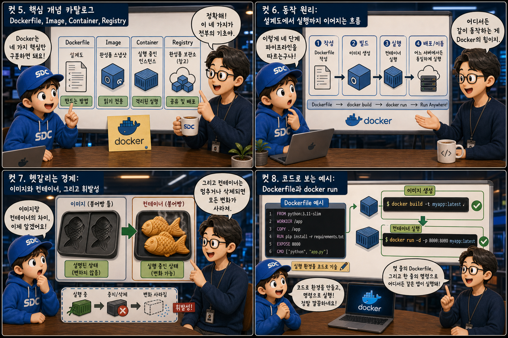
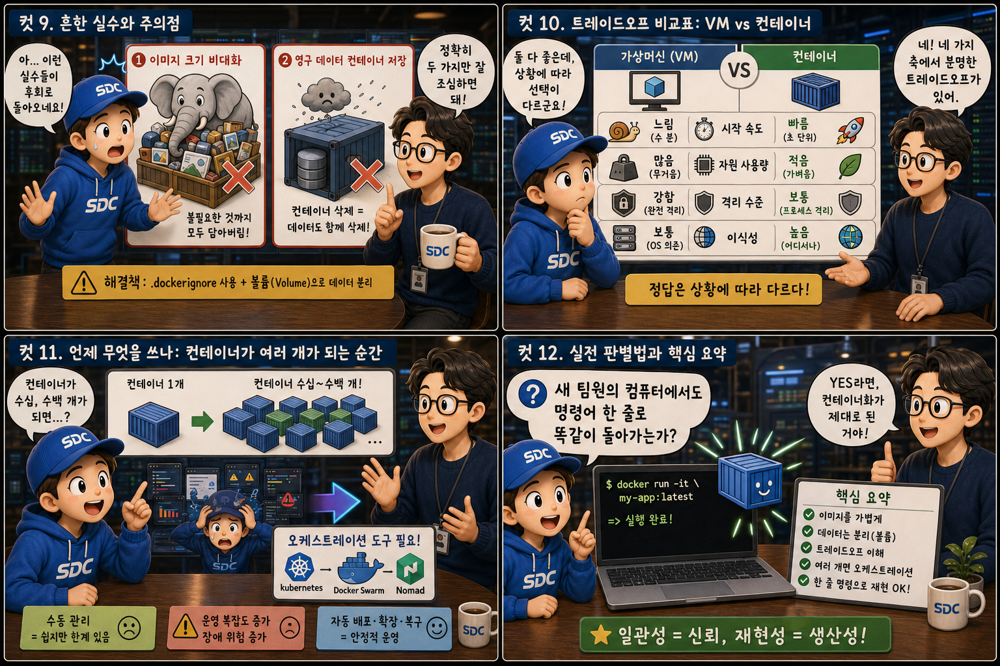

표준 규격 운송 컨테이너에 비유해, ‘내 컴퓨터에선 되는데’ 문제를 어떻게 근본적으로 없애는지 12컷으로 풀어봅니다.
ContainervsVM
“내 컴퓨터에선 되는데 서버에서는 안 돼요” — 개발자라면 누구나 한 번쯤 들어봤거나 직접 내뱉어본 말입니다. 운영체제 버전, 라이브러리 버전, 환경 변수 하나만 달라도 같은 코드가 다르게 동작하는 이 오래된 골칫거리를, 이사·운송용 표준 규격 컨테이너라는 발명품에 빗대어 살펴봅니다. 트럭이든 배든 기차든 크레인이든, 안에 무엇이 들었는지와 상관없이 똑같은 방식으로 싣고 내릴 수 있는 컨테이너처럼, 소프트웨어의 컨테이너 역시 애플리케이션과 실행 환경을 하나로 포장해 어떤 서버에 올리든 동일하게 동작하게 만듭니다.
PART 1 / 3 — 컨테이너란 무엇인가 (컷 01–04)
fourcut-01 — 컷 01 ~ 04
컷 01
이 코드를 어디서든 똑같이 실행하려면
“내 컴퓨터에선 되는데요”라는 말은 개발자들이 가장 많이 하는 변명이자 가장 오래된 골칫거리다.
항구의 부두, 격자로 가지런히 쌓인 스틸 블루 컨테이너 박스들, 그리고 그 위로 뻗어나가 트럭과 배와 기차에 문제없이 실려 가는 컨테이너를 떠올려 보세요. 안에 무엇이 들었든 싣고 내리는 방식은 항상 똑같습니다. “내 컴퓨터에선 되는데 서버에서는 안 된다”는 문제는 결국 실행 환경의 차이에서 생깁니다. 운영체제 버전, 설치된 라이브러리 버전, 환경 변수 하나만 달라도 같은 코드가 다르게 동작할 수 있습니다. 컨테이너는 애플리케이션과 그 실행에 필요한 모든 것을 표준 규격 상자처럼 하나로 포장해서, 이 환경 차이라는 문제 자체를 근본적으로 없애는 기술입니다.
컷 02
정의부터 명확히: 컨테이너란 무엇인가
컨테이너는 애플리케이션 코드와 그것을 실행하는 데 필요한 모든 것을 하나로 묶어 격리된 공간에서 실행하는 단위다.
컨테이너는 애플리케이션 코드, 런타임, 라이브러리, 시스템 도구, 설정 파일을 모두 하나의 패키지로 묶어 격리된 환경에서 실행하는 단위입니다. Application + Dependencies + Config가 하나의 점선 테두리 안에 함께 묶여 있는 모습을 떠올리면 이해가 쉽습니다. 이 패키지 안에는 애플리케이션이 동작하는 데 필요한 모든 것이 들어 있기 때문에, 패키지를 통째로 옮기면 어느 호스트 서버에서 실행하든 똑같이 동작합니다. 얇지만 분명한 경계선 하나가 컨테이너 내부와 바깥의 호스트를 갈라놓습니다.
컷 03
나란히 비교: 가상머신과 컨테이너
가상머신은 각자 자기만의 운영체제 전체를 통째로 들고 다니는 무거운 방식이고, 컨테이너는 운영체제 커널을 공유해서 훨씬 가볍게 격리를 구현하는 방식이다.
가상머신은 하이퍼바이저 위에 게스트 운영체제 전체를 설치해서 격리를 구현하기 때문에 무겁고 부팅에도 시간이 걸립니다. 두껍고 각자 따로 서 있는 상자 세 개, 그 안에 저마다 OS 전체가 통째로 들어있는 모습이 딱 그렇습니다. 반면 컨테이너는 호스트 운영체제의 커널을 여러 컨테이너가 함께 공유하고, 프로세스 수준에서만 격리를 적용합니다. 하나의 공통된 커널이라는 받침대 위에 얇은 상자들이 나란히 서 있는 것처럼요. 그래서 컨테이너는 이미지 크기가 작고 시작 속도가 초 단위, 때로는 밀리초 단위로 빠릅니다.
컷 04
핵심 문장 인용카드: 한 번 빌드하면 어디서든 동일하게
컨테이너 기술 전체를 관통하는 한 문장은 “Build once, run anywhere”다. 빌드는 한 번, 실행은 어디서든 동일하게.
ORIGINAL
Build once, run anywhere
번역
한 번 빌드하면 어디서든 동일하게 실행된다
core principle
컨테이너 이미지는 실행에 필요한 모든 것을 담고 있기 때문에, 개발자의 노트북에서 빌드한 이미지를 그대로 회사 서버나 클라우드에 올려도 동일하게 동작합니다. 이것이 “Build once, run anywhere”라는 원칙입니다. 환경 차이로 발생하던 배포 실패의 상당수가 이 원칙 덕분에 사라집니다.
PART 2 / 3 — 개념과 동작 원리 (컷 05–08)

fourcut-02 — 컷 05 ~ 08
컷 05
핵심 개념 카탈로그: Dockerfile, Image, Container, Registry
Docker를 이해하려면 네 가지 개념만 구분하면 된다: 설계도, 완성품 스냅샷, 실행 중인 인스턴스, 그리고 그것을 보관하는 창고.
Dockerfile은 이미지를 어떻게 만들지 적어둔 설계도 텍스트 파일입니다. 이 설계도를 docker build로 빌드하면 Image라는 실행 가능한 스냅샷이 만들어지고, 이 Image를 실제로 띄우면 그것이 Container, 즉 실행 중인 인스턴스가 됩니다. Registry는 Docker Hub처럼 이렇게 만든 Image들을 저장하고 공유하는 창고 역할을 합니다. 설계도를 빌드하면 스냅샷이 되고, 스냅샷을 실행하면 인스턴스가 되며, 스냅샷은 창고에 저장해 공유하는 것 — 네 개념의 관계는 이것이 전부입니다.
컷 06
동작 원리: 설계도에서 실행까지 이어지는 흐름
Dockerfile 작성부터 어느 서버에서든 동일하게 실행되기까지, 컨테이너는 네 단계의 명확한 파이프라인을 따른다.
Dockerfile 작성→docker build → Image→docker push → Registry→docker run→어디서든 동일하게 실행
먼저 Dockerfile에 필요한 실행 환경을 명령어로 적습니다. 이 파일을 docker build로 빌드하면 Image가 만들어지고, 필요하면 docker push로 Registry에 올려 공유합니다. 이후 어느 서버에서든 같은 이미지를 내려받아 docker run으로 실행하면, 노트북이든 온프레미스 서버든 클라우드든 결과는 항상 동일합니다. 조립 라인처럼 한 방향으로만 흐르는 이 파이프라인이 배포의 불확실성을 크게 줄여줍니다.
컷 07
헷갈리는 경계: 이미지와 컨테이너, 그리고 휘발성
이미지는 붕어빵 틀이고 컨테이너는 그 틀로 구운 붕어빵이다. 그리고 컨테이너는 멈추거나 삭제되면 그 안의 변화가 사라지는 휘발성 존재다.
이미지는 변하지 않는 읽기 전용 틀이고, 컨테이너는 그 틀에서 실제로 실행되는 인스턴스입니다. 같은 틀(Image)로 붕어빵(Container)을 여러 개 구워낼 수 있는 것과 같습니다. 다만 컨테이너 내부에 생긴 파일 변경은 기본적으로 컨테이너와 운명을 같이 하므로, 컨테이너를 삭제하면 그 안의 데이터도 함께 증발합니다. 데이터를 영구히 보존하려면 컨테이너 바깥의 Volume이라는 외장 저장소에 따로 담아야 합니다.
컷 08
코드로 보는 예시: Dockerfile과 docker run
실제 Dockerfile은 몇 줄의 명령어로 실행 환경을 완전히 기술하고, 이를 이미지로 만들어 한 줄의 명령으로 실행한다.
Dockerfile — 실행 환경 설계도
# 실행 환경을 코드로 적는다FROM node:20
COPY . .
RUN npm install
CMD ["node", "server.js"]
Terminal — 빌드하고 실행하기
# 이미지로 빌드한 뒤 실행한다
docker build -t myapp .
docker run myapp
# → 어디서든 동일하게 동작
FROM node:20은 어떤 기본 환경 위에서 시작할지 정하고, COPY . .는 소스 코드를 이미지 안으로 복사하며, RUN npm install은 필요한 라이브러리를 설치합니다. CMD는 컨테이너가 시작될 때 실행할 명령을 지정합니다. 이 Dockerfile을 docker build -t myapp .로 빌드하면 이미지가 만들어지고, docker run myapp으로 어디서든 동일한 컨테이너를 즉시 띄울 수 있습니다.
PART 3 / 3 — 실전 감각과 요약 (컷 09–12)

fourcut-03 — 컷 09 ~ 12
컷 09
흔한 실수와 주의점
이미지에 불필요한 것까지 다 담아 크기를 비대하게 만드는 실수, 그리고 컨테이너 안에 영구 데이터를 저장했다가 삭제와 함께 날리는 실수가 가장 흔하다.
⚠ 불필요한 파일까지 이미지에 욱여넣기
소스 코드와 빌드 도구, 임시 캐시까지 그대로 남겨두면 이미지 용량이 옆구리가 터질 듯 불필요하게 커지고, 배포와 저장 비용이 함께 늘어납니다.
⚠ 컨테이너 삭제 = 내부 데이터 영구 손실
컨테이너는 삭제되면 내부에 저장된 데이터도 함께 사라집니다. 데이터베이스 파일처럼 유지해야 하는 데이터를 컨테이너 안에만 두면, 컨테이너 하나가 파쇄기에 들어가듯 사라질 때 데이터도 같이 갈려 없어집니다.
✓ .dockerignore·멀티스테이지 빌드 + Volume
멀티 스테이지 빌드나 .dockerignore로 꼭 필요한 것만 이미지에 담고, 유지해야 하는 데이터는 반드시 컨테이너 바깥의 Volume에 저장해야 합니다.
컷 10
트레이드오프 비교표: 가상머신과 컨테이너
가상머신과 컨테이너는 시작 속도, 자원 사용량, 격리 수준, 이식성이라는 네 축에서 분명한 트레이드오프를 가진다.
same isolation, different weight class
비교 축
컨테이너 (Container)
가상머신 (VM)
시작 속도
초~밀리초 단위로 빠름
게스트 OS 부팅 필요, 느림
자원 사용량
가볍다 (커널 공유)
무겁다 (OS 전체 탑재)
격리 수준
프로세스 수준 격리 (상대적으로 약함)
하이퍼바이저 기반 완전 격리 (강함)
이식성
이미지 하나로 어디든 실행 (우위)
가능하지만 상대적으로 무거움
가상머신은 게스트 운영체제 전체를 격리하기 때문에 격리 수준은 더 강하지만, 시작 속도가 느리고 자원을 더 많이 소모합니다. 컨테이너는 커널을 공유하는 대신 시작이 빠르고 자원 사용량이 적으며 이식성이 뛰어나지만, 격리 수준은 VM보다 낮습니다. 그래서 웹 애플리케이션처럼 빠른 배포와 확장이 중요한 환경에서는 컨테이너가 널리 쓰입니다.
컷 11
언제 무엇을 쓰나: 컨테이너가 여러 개가 되는 순간
컨테이너 하나를 다루는 것은 쉽지만, 수십 수백 개를 함께 운영해야 하는 순간부터는 오케스트레이션 도구가 필요해진다.
컨테이너 한두 개를 운영할 때는 docker run 명령 몇 개로 충분합니다. 손 하나로도 가볍게 다룰 수 있는 상자니까요. 하지만 서비스가 커져 수십, 수백 개의 컨테이너를 여러 서버에 나눠 운영하고, 장애 시 자동으로 재시작하고, 트래픽에 따라 자동으로 확장해야 한다면 사람이 수동으로 관리하기 어렵습니다. 이때 필요한 것이 Kubernetes 같은 오케스트레이션 도구이며, 커다란 조타 핸들처럼 다수의 컨테이너를 자동으로 배치하고 관리해 줍니다.
컷 12
실전 판별법과 핵심 요약
“새 팀원의 컴퓨터에서도 명령어 한 줄로 똑같이 돌아가는가?”라는 질문 하나로 컨테이너화가 제대로 되었는지 판별할 수 있다.
새로운 팀원이 합류했을 때, 복잡한 설치 가이드 없이 docker run myapp 한 줄로 프로젝트가 똑같이 실행된다면 컨테이너화가 잘 되어 있는 것입니다. 설치도 설정도 필요 없이 바로 실행되는 그 순간이야말로, 이 기술이 약속하는 것이 지켜졌다는 증거입니다.
Container = 격리된 실행 단위Image = 실행 가능한 스냅샷Dockerfile = 설계도Build once, run anywhere휘발성 → 영구 데이터는 Volume여러 개면 Kubernetes
표준 규격 상자 하나가 바꾼 것
컨테이너는 애플리케이션과 실행 환경을 하나의 표준 규격 상자에 담아, 노트북이든 온프레미스 서버든 클라우드든 동일하게 실행되게 만듭니다. 다만 그 상자는 기본적으로 휘발성이라는 것, 그리고 상자가 여러 개로 늘어나는 순간부터는 오케스트레이션이 필요하다는 것을 함께 기억해야 합니다.